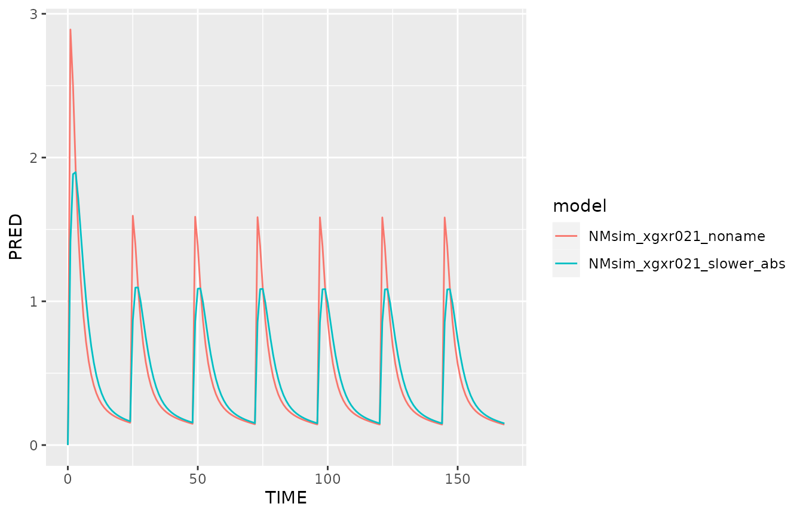
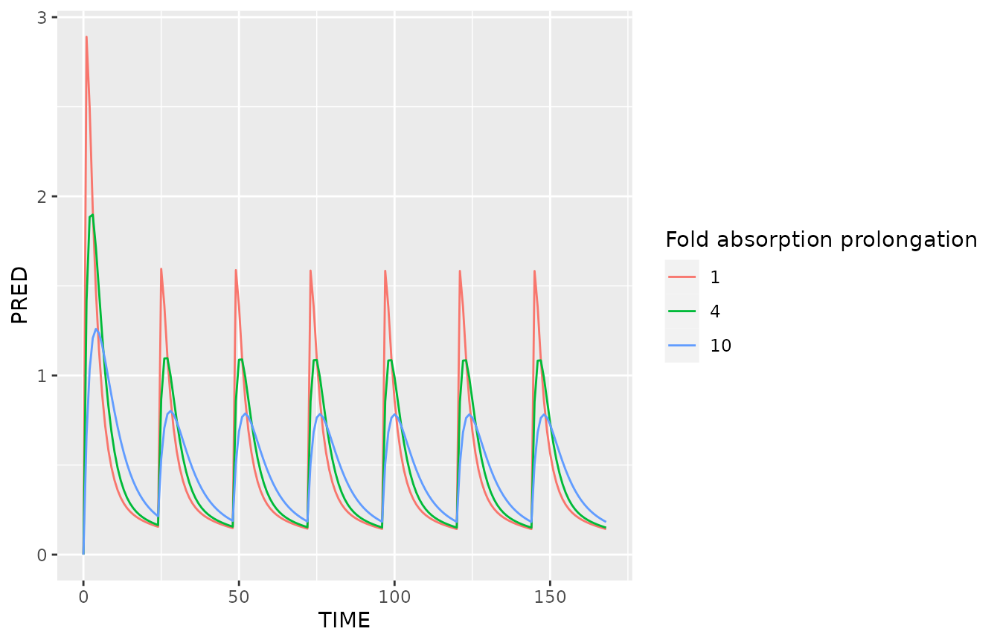

Built 2024-02-21 using NMsim 0.0.10.931.
Objectives
This vignettes aims at enabling you to use NMsim for the
following purposes
- Simulation with parameters modified from the estimated values
Vary parameter values
Sometimes we want to simulate with some modification to the estimated
model. NMsim can make such user-specified modifications to the model
before simulating through the list.sections argument.
The SAD study was run with a fast solution formulation. We want to
see how a slower absorption rate would affect the PK prediction for the
multiple dose regimen. In the model estimate, TVKA=2.17. We
now try with a four times slower absorption:
simres <- NMsim(file.mod=file.mod
,data=dat.sim
,dir.sims="~/NMsim_vignette" ## where to store simulation files
,seed=12345
)
simres.slowabs <- NMsim(file.mod=file.mod,
data=dat.sim
,dir.sims="~/NMsim_vignette" ## where to store simulation files
,name.sim="slower_abs"
,seed=12345
,list.sections=list(PK=function(x)c(x,"TVKA=TVKA/4","KA=KA/4"))
)
We used list.sections to modify the $PK
section. We used it to append two lines. We could use it to modify any
section in the model, and we could essentially do any modification.
However, appending to $PK or $PRED is simple
and often both robust and flexible enough.
That was a very spcific analysis of one specific KA
value. It is often more convenient to control the numeric changes to the
model using the simulation input data set rather than hard-coding
numerical values into list.sections. The following tries a
number of fold changes to KA.
NMdataConf(as.fun="data.table")
dat.sim.varka <- egdt(dat.sim,data.table(KASCALE=c(1,4,10)))
dat.sim.varka[,ID:=.GRP,by=.(KASCALE,ID)]
setorder(dat.sim.varka,ID,TIME,EVID)
simres.varka <- NMsim(file.mod=file.mod,
data=dat.sim.varka
,dir.sims="~/NMsim_vignette" ## where to store simulation files
,name.sim="varka"
,seed=12345
,list.sections=list(PK=function(x)c(x,"TVKA=TVKA/KASCALE","KA=KA/KASCALE"))
)
ggplot(simres.varka[simres.varka$EVID==2,],aes(TIME,PRED,colour=factor(KASCALE)))+
geom_line()+
labs(colour="Fold absorption prolongation")